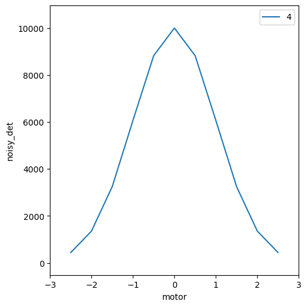

Demo: Notebook Startup#
[ ]:
from apsbits.demo_instrument.startup import * # noqa
I Thu-17:24:34.649: **************************************** Bluesky Startup Initialized
Below are the IPython logging settings for your session.
These settings have no impact on your experiment.
Activating auto-logging. Current session state plus future input saved.
Filename : /home/beams1/JEMIAN/Documents/projects/BCDA-APS/bs_model_instrument/docs/source/.logs/ipython_log.py
Mode : rotate
Output logging : True
Raw input log : False
Timestamping : True
State : active
W Thu-17:24:36.071: APS DM setup file does not exist: '/home/dm/etc/dm.setup.sh'
Exception reporting mode: Minimal
End of IPython settings
I Thu-17:24:40.706: Databroker catalog: temp
I Thu-17:24:41.271: RunEngine metadata saved in directory: /home/beams/JEMIAN/.config/Bluesky_RunEngine_md
I Thu-17:24:41.296: using ophyd control layer: 'pyepics'
I Thu-17:24:42.053: SPEC data file: /home/beams1/JEMIAN/Documents/projects/BCDA-APS/bs_model_instrument/docs/source/20241031-172442.dat
Run the plans with simulated controls.
[2]:
RE(sim_print_plan())
sim_print_plan(): This is a test.
sim_print_plan(): sim_motor.position=0 sim_det.read()=OrderedDict([('noisy_det', {'value': 1.0248434173924217, 'timestamp': 1730413480.6081476})]).
[2]:
()
[3]:
RE(sim_count_plan())
Transient Scan ID: 3 Time: 2024-10-31 17:24:42
Persistent Unique Scan ID: '10ad31d3-fda1-4450-8c68-36c8c6808e54'
New stream: 'primary'
+-----------+------------+------------+
| seq_num | time | noisy_det |
+-----------+------------+------------+
| 1 | 17:24:42.3 | 9999.999 |
+-----------+------------+------------+
generator count ['10ad31d3'] (scan num: 3)
[3]:
('10ad31d3-fda1-4450-8c68-36c8c6808e54',)
[4]:
RE(sim_rel_scan_plan())
sim_rel_scan_plan(): sim_motor.position=0.
sim_rel_scan_plan(): sim_det.read()=OrderedDict([('noisy_det', {'value': 9999.999278102245, 'timestamp': 1730413482.3491757})]).
sim_rel_scan_plan(): sim_det.read_configuration()=OrderedDict([('noisy_det_Imax', {'value': 10000, 'timestamp': 1730413482.4878476}), ('noisy_det_center', {'value': 0, 'timestamp': 1730413482.489344}), ('noisy_det_sigma', {'value': 1, 'timestamp': 1730413482.4905345}), ('noisy_det_noise', {'value': 'uniform', 'timestamp': 1730413482.4932268}), ('noisy_det_noise_multiplier', {'value': 0.1, 'timestamp': 1730413480.6077008})]).
sim_rel_scan_plan(): sim_det.noise._enum_strs=('none', 'poisson', 'uniform').
Transient Scan ID: 4 Time: 2024-10-31 17:24:42
Persistent Unique Scan ID: '7f50cc40-0a89-4c30-9894-c1cf257f0946'
New stream: 'primary'
+-----------+------------+------------+------------+
| seq_num | time | motor | noisy_det |
+-----------+------------+------------+------------+
| 1 | 17:24:42.5 | -2.500 | 439.283 |
| 2 | 17:24:42.6 | -2.000 | 1353.366 |
| 3 | 17:24:42.7 | -1.500 | 3246.447 |
| 4 | 17:24:42.7 | -1.000 | 6065.363 |
| 5 | 17:24:42.8 | -0.500 | 8825.050 |
| 6 | 17:24:42.9 | 0.000 | 9999.999 |
| 7 | 17:24:42.9 | 0.500 | 8824.966 |
| 8 | 17:24:43.0 | 1.000 | 6065.309 |
| 9 | 17:24:43.0 | 1.500 | 3246.490 |
| 10 | 17:24:43.1 | 2.000 | 1353.368 |
| 11 | 17:24:43.1 | 2.500 | 439.322 |
+-----------+------------+------------+------------+
generator rel_scan ['7f50cc40'] (scan num: 4)
[4]:
('7f50cc40-0a89-4c30-9894-c1cf257f0946',)
